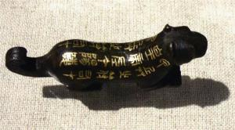

政治
首称皇帝
秦始皇之前的各国诸侯都被称为“君”或“王”。战国后期，秦国与齐国曾一度称“帝”，不过这一称号在当时并不同行。一统天下的秦始皇，以为这些称号都不足显示自己的尊崇，于是下令大臣议称号。经过一番议论，丞相王绾、御史大夫冯劫、廷尉李斯等人认为，秦王政“兴义兵，诛残贼，平定天下”，功绩“自上古以来未尝有，五帝所不及”。他们援引传统的尊称，说“古有天皇，有地皇，有泰皇，泰皇最贵”，建议秦王政采用“泰皇”头衔。然而，秦始皇对此并不满意。他只采用一个“皇”字，因有“三皇五帝”而在其下加一“帝”字，创造出“皇帝”称号。从此以后，“皇帝”就成为中国封建社会最高统治者的称谓。
秦始皇做了中国历史上第一个皇帝，自称“始皇帝”。他又规定：自己死后皇位传给子孙时，后继者沿称二世皇帝、三世皇帝，以至万世。秦始皇想皇位永远由他一家继承下去，“传之无穷”。为了使皇帝的地位神圣化，秦始皇又采取了一系列“尊君”的措施：
首先取消谥法。谥法起于周初，是在君王死后，依其生平事迹，给予带有评价性质的称号。但秦始皇认为，像这样“子议父，臣议君”，太不像话，更没意义。他宣布废除谥法，不准后代臣子评价自己。
其次天子自称曰“朕”。“朕”字的意义与“我”相同，以前一般人也可以使用，但秦始皇限定只有皇帝才能自称为“朕”。皇帝的命令叫作“制”或“诏”（命曰制，令曰诏，盖二者效令不同也）。
第三，文字中不准提及皇帝的名字，要避讳。文件上逢“皇帝”“始皇帝”等字句时，都要另起一行顶格书写。
最后，只限皇帝使用的、以玉质雕刻的大印才能称为“玺”。
军事
统一六国
（1）灭韩国韩国的实力在六国中最弱，但地理位置却是秦国统一道路的最大障碍，秦始皇首选的攻击目标为韩国。但是，秦军屡次进攻韩国，均被韩国击退。在用主力进攻韩国的同时，秦对韩采取扶植亲秦势力以逐步肢解的策略。前231年，韩国南阳郡“假守”（即代理郡守）腾，向秦献出他所管辖的属地。腾被秦王政任命为内史，后又派他率军进攻韩国。腾对韩国了如指掌，所以进展顺利，于秦王政十七年（前230年）俘获韩王安，韩国灭亡。
（2）灭赵国前229年，秦利用赵国发生大地震和大灾荒的机会，又派王翦领兵攻赵。赵国派李牧、司马尚率兵抵御，双方相持了一年，秦国使出离间计。
王翦用重金收买了赵王的宠臣郭开，要他散布李牧、司马尚企图谋反的流言。赵王轻信谣言，派赵葱和颜聚替代李牧。李牧在大敌当前的形势下据不让出兵权，赵王竟暗地派人逮捕李牧并处死了他，同时还杀掉了司马尚。杀死李牧，无疑为秦军亡赵扫清了道路。此后，秦军如入无人之境，攻城略地。
秦王政十九年（前228年），秦军攻破邯郸。不久，出逃的赵王迁被迫降秦，赵国实际上灭亡了。但是公子嘉却带着一伙人逃到代郡（河北蔚县），自立为王。后秦军在公元前222年灭燕国之后将其俘虏。至此，秦统一了北方。
（3）灭魏国前231年，魏景湣王迫于秦国的强大威力，主动向秦献出丽邑，以求缓兵。此时，秦王政正调集兵力准备向赵国发起总攻，不想分散兵力攻魏，就接受了献地。这使得魏国又维持了数年残局。
秦王政二十二年（前225年），就在秦军主力南下攻楚之时，秦王政派出年轻将领王贲，率军围攻魏都大梁（河南开封）。魏军紧闭城门，坚守不出。由于大梁城防经过多年修建，异常坚固，秦军强攻不下。王贲想出了水攻的办法。秦军大批士卒被安排去挖掘渠道，将黄河、鸿沟的水引来，灌注到大梁。三个月后，大梁的城墙壁垒全被浸坍，魏王假只得投降。魏国灭亡了。
（4）灭楚国楚国疆域辽阔，物产丰富，号称拥有甲士百万。但是，楚国总是贵族争权夺利，这种状况到战国末期尤为严重。元前226年，秦王政不失时机地从北方伐燕前线抽调秦军，南下攻楚，连续夺得楚国10余个城池。前224年，秦国与楚国的决战就开始，秦王政先派年轻将领李信率20万秦军攻楚，被楚军击败。后又派大将王翦率60万秦军攻楚。王翦入楚境后，并未马上发动攻势。他总结了李信轻敌冒进的教训，采取屯兵练武，坚壁不出，麻痹敌人，以逸待劳的战略，度过了一年多的时间，秦军对楚地的情况基本适应，士气高昂，体力充沛。同时，被调来抗击秦军的楚国部队，斗志渐渐松懈，加上粮草不足，准备东归。楚军一撤，王翦就抓住时机下令全军出击。秦军一举打垮了楚军的主力，并长驱直入，挺入内地，杀死楚军统帅项燕。
秦王政二十四年（前223年）秦军攻占楚都寿春（安徽寿县），俘虏了楚王负刍，楚国灭亡。秦王政二十五年（前222年），刚在南方灭楚的大军，又乘胜降服了越君，设置会稽郡。于是，长江流域全部并入秦的版图。
（5）灭燕国在灭赵的过程中，秦国大军已兵临燕国边境。燕王喜眼见秦国扫平三晋，就要向自己杀来，却无计可施。燕太子丹想出了荆轲刺秦王，刺杀行动最终失败，秦王政差一点死于荆轲的匕首下，立即增兵大举进攻。前226年，秦军攻下燕都蓟（北京市），燕王喜与太子丹逃亡辽东郡。秦将李信率领秦军数千人，穷追太子丹至衍水。太子丹因潜伏于水中幸免于难。后来，燕王喜经过权衡利害关系，派人将太子丹杀掉，将其首级献给秦国，想以此求得休战，保住燕国不亡。燕王喜逃到辽东以后，秦军主力就调往南线进攻楚国。
前222年，王贲奉命攻伐燕国在辽东的残余势力，俘获燕王喜，燕国彻底灭亡。
（6）灭齐国秦王政二十六年（前221年），秦王政命令王贲挥戈南下，攻打东方六国中的最后一个：齐国。从春秋到战国中期，齐是山东诸国中比较强大的一个。但是，前284年燕、赵、韩、魏、楚五国攻齐，尤其是燕将乐毅横扫齐国，令齐国差点亡国。之后，齐国一直没有复强。而且，此时的齐王建是个无能之辈。
前249年，后胜任宰相。秦国迅速展开收买内应的活动，向后胜馈赠大量的黄金、玉器。后胜得了秦国的好处，就派出大批宾客相继赴秦。秦国又对他们大肆贿赂，送给金钱、珍宝，让他们回齐国充当内应。这批人从秦国回来后，就积极地制造亲秦的舆论。他们说齐王建应西去朝秦，以表归顺，又说齐秦是姻亲，根本不用备战抗秦，也不要帮助三晋、燕、楚攻秦。正是在这种情况下，王贲南下伐齐，几乎就没有遇到过什么抵抗。王贲率军长驱直入，来到临淄，齐王建与后胜马上向秦投降。齐国灭亡。
至此，秦国走完了削平群雄、统一六国的最后一程。